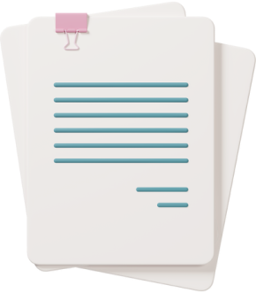

Ühing
Eesti Labradori Retriiverite Tõuühing (ELRÜ) ühendab isikuid, kelle tegevus või huvid on seotud labradori retriiveri tõugu koertega.
Ühing
Eesti Labradori Retriiverite Tõuühing (ELRÜ) ühendab isikuid, kelle tegevus või huvid on seotud labradori retriiveri tõugu koertega.

Põhikiri
EESTI LABRADORI RETRIIVERITE TÕUÜHINGU PÕHIKIRI